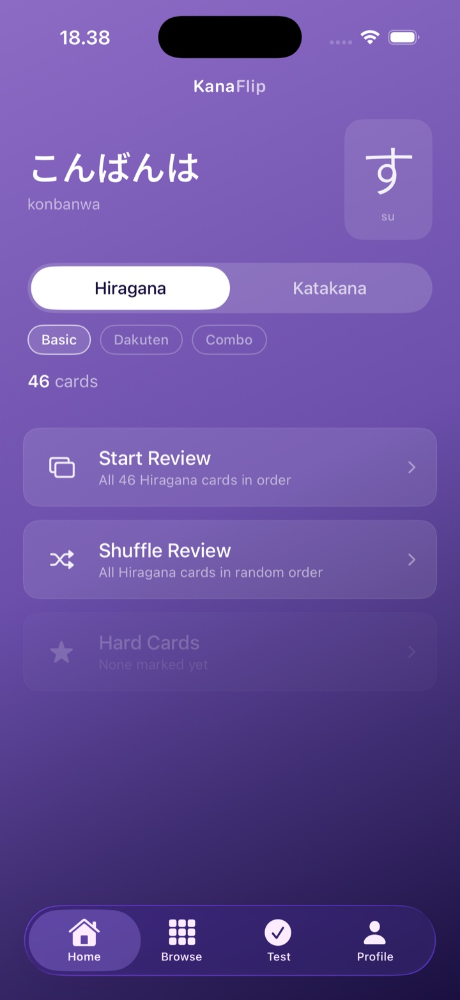

iOS · Japanese kana
Master hiragana & katakana.
Flashcards and quick quizzes, with spaced repetition so characters stay memorized—plus a final test, home screen widget, and reminders.
- SRS
- Quizzes
- Widget

iOS · Japanese kana
Flashcards and quick quizzes, with spaced repetition so characters stay memorized—plus a final test, home screen widget, and reminders.
